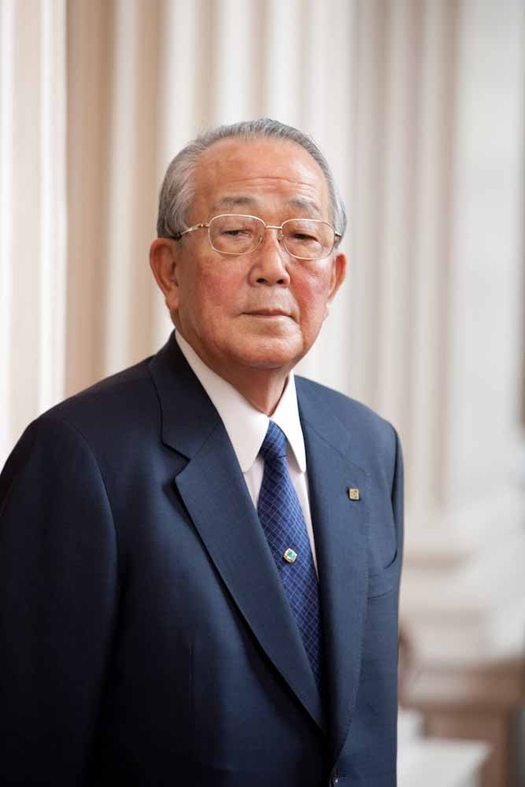
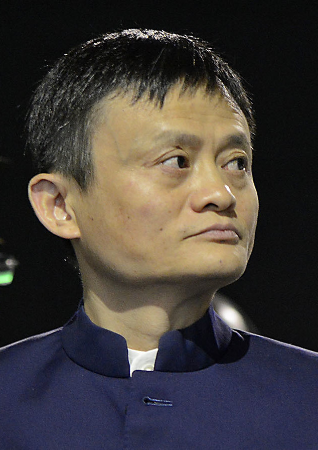
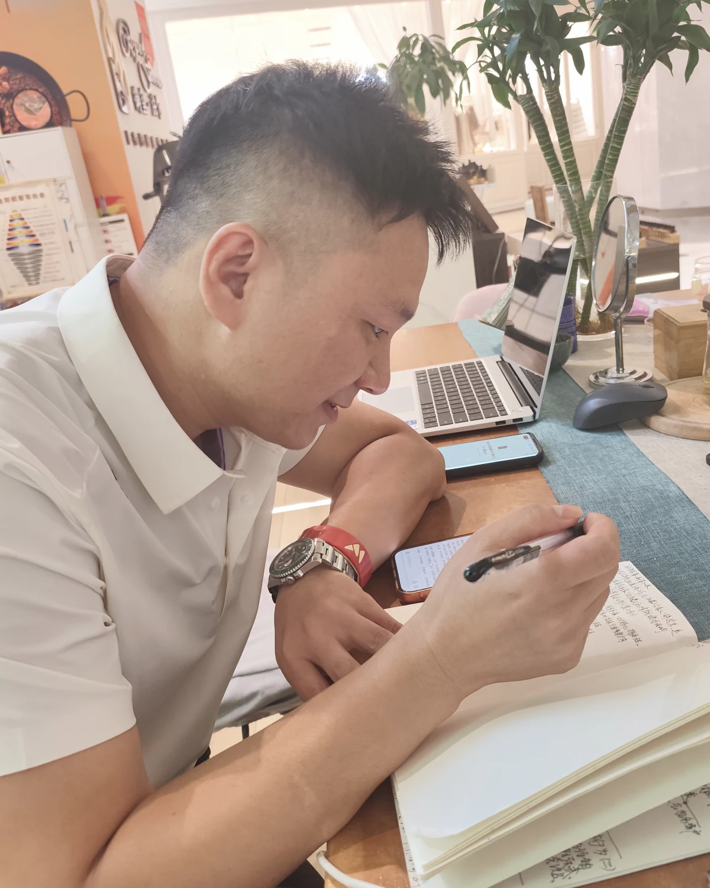

触达
客户还没有机会真正认识我们
问题藏在入口里爱要有专业承载
慈悲要用行动完成
这不是一场关于感动的分享，而是一场关于如何把关心变成专业、服务和结果的讨论。
只讲命，会失去行动；只讲拼命，也可能在错误方向里持续消耗。
它不是审判，
而是六项可改进的功课。
看见恐惧、执念
与急于求成
练好专业、表达
与持续服务
相信人的力量 · 帮助他人获得成功


为什么结果还没有发生？
用熟悉的方法，
重复熟悉的结果。
不是因为一时感动留下，
而是因为愿意对每一句表达负责。

心愿要有现实的重量：学习、核验、分享、服务。
触达在哪里不足，信任在哪里断掉，伙伴在哪里缺少方法。
市场没有惩罚我们。它只是把触达不足、信任断点和行动阻力照了出来。
客户还没有机会真正认识我们
问题藏在入口里事实还没有被专业地讲清楚
问题藏在表达里伙伴还看不清可以开始的第一步
问题藏在方法里问题往往不是市场没人，而是我们的触达入口太少。
不把每一次见面都压成成交，信任反而更容易发生。
回到正式说明、正确使用、真实记录和持续服务。
服务不是一句“有问题找我”，而是让客户知道每一步都有人负责。
事实、用法与表达边界
依据正式指引回访与陪伴
不编答案，及时核实
团队需要的不只是鼓励，而是一套陪着伙伴做会的系统。
完成多少次有效沟通
邀请多少人规范了解
举办或协助几场分享
完成多少次真实记录
全力推进，不是把压力层层下传，而是把伙伴需要的方法、边界和回应准备好。
要求一个人向前走，团队就先把他会遇到的难题接过来。